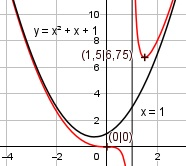

Aufgabe 109 x3 f(x) = ------- x - 1 Quotientenregel erste Ableitung: u = x3, u' = 3x2 v = x - 1, v' = 1 3x2 * (x - 1) - 1 * x3 f'(x) = ------------------------ (x - 1)2 3x3 - 3x2 - x3 2x3 - 3x2 f'(x) = ------------------ = ------------ (x - 1)2 (x - 1)2 Quotientenregel zweite Ableitung: u = 2x3 - 3x2, u' = 6x2 - 6x v = (x - 1)2 Kettenregel: v' = 2 * (x - 1) (6x2 - 6x)(x - 1)2 - 2(x-1)*(2x3-3x2) f''(x) = --------------------------------------- (x - 1)4 (x-1)*[(6x2 - 6x)(x-1) - 2*(2x3-3x2)] f''(x) = --------------------------------------- (x - 1)4 6x3 - 12x2 + 6x - 4x3 + 6x2 f''(x) = ----------------------------- (x - 1)3 2x3 - 6x2 + 6x f''(x) = ----------------- (x - 1)3 Zur Beurteilung, ob f'''(x) ≠ 0 : (Begründung siehe Aufgabe 105) u = 2x3 - 6x2 + 6x, u' = 6x2 - 12x + 6 u' 6x2 - 12x + 6 f'''(x) = --- = --------------- v (x - 1)3 6 * (x2 - 2x + 1) 6 * (x - 1)2 f'''(x) = ------------------- = -------------- (x - 1)3 (x - 1)3 6 f'''(x) = ------- (x - 1) --> f'''(x) ≠ 0 für alle x ≠ 1 Polstellen, Nenner = 0: x - 1 = 0 |+1 x = 1 Nenner = 0 und Zähler ≠ 0 --> senkrechte Asymptote Definitionsbereich: -∞ < x < ∞, x ≠ 1 Zählergrad größer als Nennergrad --> Näherungskurve 1 f(x) = x3 : (x - 1) = x2 + x + 1 + ------ -(x3 - x2) x - 1 ----------- x2 -(x2 - x) ---------- x -(x - 1) -------- 1 1 x2 + x + 1 + ------- geht gegen x - 1 x2 + x + 1 für x --> ± ∞ Wertebereich: -∞ < f(x) < ∞ Symmetrie zur y-Achse bzw. zum Punkt (0|0): (-x)3 -x3 x3 f(-x) = -------- = ---------- = ------- ≠ f(x) -x - 1 -(x + 1) x + 1 --> keine Achsensymmetrie -x3 -f(-x) = ------- ≠ f(x) x + 1 --> keine Punktsymmetrie Nullstellen: f(x) = 0 x3 ------- = 0 |*(x - 1) x - 1 x3 = 0 | x1,2,3 = 0 Schnittpunkt mit der y-Achse: 03 f(0) = ------ = 0 0 - 1 Sy(0|0) Extrempunkte: f'(x) = 0 2x3 - 3x2 ---------- = 0 |*(x - 1)2 (x - 1)2 2x3 - 3x2 = 0 x2 * (2x - 3) = 0 x1,2 = 0; f(x1,2) = 0 2x - 3 = 0 | +3 2x = 3 |:2 x3 = 1,5 1,53 f(1,5) = --------- = 6,75 1,5 - 1 2 * 03 - 6 * 02 + 6 * 0 f''(0) = -------------------------- = 0 (0 - 1)3 2 * 1,53 - 6 * 1,52 + 6 * 1,5 f''(1,5) = ------------------------------- (1,5 - 1)3 2,25 = ------ > 0 --> Tiefpunkt (1,5|6,75) 0,5 Wendepunkte: f''(x) = 0 2x3 - 6x2 + 6x = 0 2x * (x2 - 3x + 3) = 0 2x = 0 |:2 x1 = 0 f'(0) = 0, f''(0) = 0, f'''(0) ≠ 0 --> >Wendepunkt (Sattelpunkt) bei (0|0) x2 - 3x + 3 = 0 p, q - Formel p = -3, q = 3 x2,3 = x2,3 = 1,5 ± x2,3 = 1,5 ± --> keine Lösung Graph:
